住所
ADDRESS · 郵便番号 · 基本住所 · 詳細住所の三つの欄を一つにまとめて
住所フィールドとは
- 1.1フィールドの追加と属性パネルの構成
1.1フィールドの追加と属性パネルの構成
概要
住所(ADDRESS) は、郵便番号 · 基本住所 · 詳細住所の三つの欄を一つのフィールドにまとめて受け付ける入力欄です。他のタイプと最も大きく異なる点がここにあります — 画面には欄が三つに見えますが、保存される値は一つであり、必須 · 検証 · 非表示などの設定もすべて三つの欄全体にまとめて適用されます。
画面説明
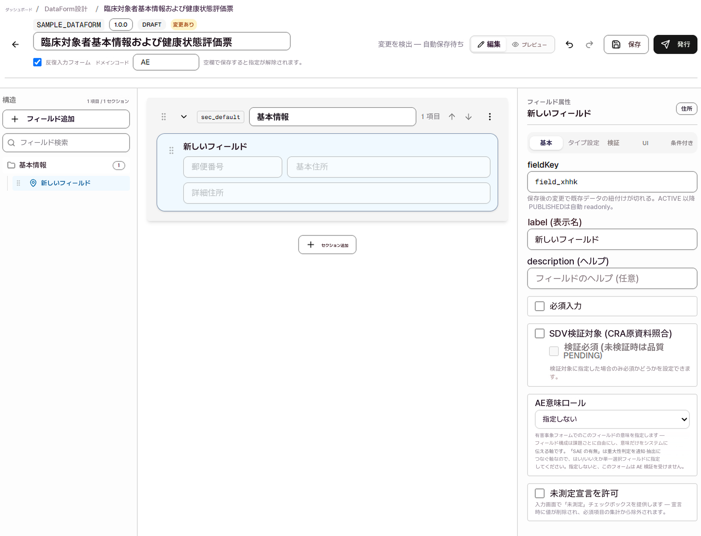
[+ フィールド追加] — ここでタイプを指定するとフィールドが作成されます。
構造ツリーに新しいフィールドが追加されます。アイコンは位置マークの形です。
WYSIWYG キャンバスに三つの欄がまとめて表示されます — 上段に郵便番号と基本住所が横に並び、下段に詳細住所が一行で配置されます。
fieldKey — 値が保存される実際のキーです。三つの欄をまとめた一つのキーです。2.1
label (表示名) · description (ヘルプ) — 画面に表示される名前と補足説明です。2.1
必須入力 · SDV検証対象 — 2.2 · 2.3 で扱います。
AE意味ロール — 画面の案内が示すとおり、はい/いいえか単一選択フィールドが指定対象なので、このタイプでは指定しません。
未測定宣言を許可 — 2.4 で扱います。
タイプバッジ「住所」 — 選択したフィールドのタイプです。追加した後は変更できません。
属性タブ 5 種 — 基本 · タイプ設定 · 検証 · UI · 条件付き。このうちタイプ設定タブは住所では設定項目が一つもないため、このマニュアルでは扱いません — そのため 2章が基本、3章が検証タブです。6.2
注意事項
必須確認 データ破損 · フォーム完了不可
- • ⛔ 住所は個人情報です。被験者の居住地は個人の特定に直結するため、本当に必要な場合にのみ収集し、該当しない被験者には条件付き表示を使って最初から尋ねないでください。5章
- • タイプは追加した後に変更できず、発行(PUBLISH)後は構造そのものを変更できません。誤って選択した場合は、フィールドを削除して再度追加してください。
誤解しやすい動作
- • 欄は三つですが、一つのフィールドです。郵便番号だけを個別に必須にしたり、詳細住所だけを個別に検証したりする設定はありません。2.2 · 3.1
- • 郵便番号の検索機能はありません。三つの欄はすべて直接入力で、地図や住所検索のウィンドウは開きません。6.2
基本タブ — 名前 · 必須 · 検証対象 · 未測定
- 2.1fieldKey · 表示名 · ヘルプ
- 2.2必須入力
- 2.3SDV検証対象 (CRA原資料照合)
- 2.4未測定宣言を許可
2.1fieldKey · 表示名 · ヘルプ
概要
フィールドの名前を決める領域です。保存キー(fieldKey)と画面に表示される名前(label)は別々の値であり、変更してよいタイミングが異なります。住所は誰のどの住所なのかが明確である必要があるため、表示名は具体的に記載してください。
画面説明
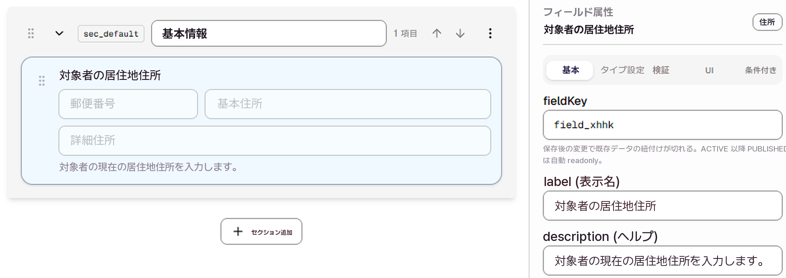
label (表示名) — 入力画面に表示する項目名を入力します。キャプチャでは 対象者の居住地住所 です。
キャンバスのフィールドタイトルとして表示されます。三つの欄全体をまとめる一つのタイトルです。
description (ヘルプ) — 表示名の下に表示する補足説明を入力します。空欄にすると表示されません。
三つの欄の下にグレーの文字で表示されます。キャプチャでは「対象者の現在の居住地住所を入力します。」です。
fieldKey — 値が保存される実際のキーです。フィールドを追加すると field_xhhk のように自動で付与され、画面の案内のとおり「保存後の変更で既存データの紐付けが切れる」です。
注意事項
必須確認 データ破損 · フォーム完了不可
- • いつ時点のどの住所なのかを表示名で明示してください。「住所」だけでは登録時の住所なのか現在の居住地なのか分からず、同じ欄に異なる時点の住所が混在します。
- • 住所は変わる可能性があることをヘルプに記載してください。長期追跡の課題では被験者が転居することが実際に起こります — いつ時点の住所なのかを記載しておかなければ、後で解釈できません。
- • fieldKey は保存した後に変更しないでください。すでに入力されたデータとの紐付けが切れ、このフィールドを参照していた検証規則3.3と条件付き表示5章もあわせて壊れます。
誤解しやすい動作
- • 表示名(label)はいつでも変更できます。保存された値には影響しません。
2.2必須入力
概要
このフィールドを必ず入力しなければフォームを完了できないようにするかどうかを決めます。住所ではこの設定が想像よりもはるかに緩く動作します — 三つの欄のうち一つでも埋まっていれば'入力済み'と判定されるためです。下記の注意事項を必ず読んでください。
画面説明
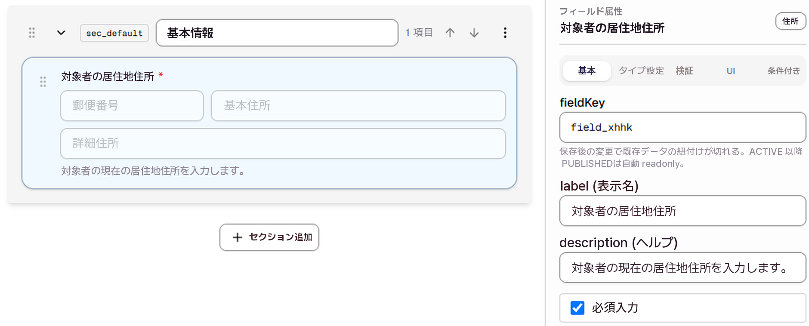
* が表示される必須入力 — 選択すると、このフィールドが必須項目になります。
キャンバスの表示名の右に赤い * が表示されます。表示はフィールドタイトルの横に一つだけ付きます — 欄ごとには付きません。
label · description — 2.1 で入力した値がそのまま表示されます。
注意事項
必須確認 データ破損 · フォーム完了不可
- • ⛔ 三つの欄のうち一つだけ埋めても必須チェックを通過します。郵便番号だけを記入して基本住所を空欄にしても、フォームは完了します — システムはまとまり全体が空かどうかだけを確認します。三つの欄をすべて受け付ける必要がある場合は、ヘルプで案内し、SDV の段階で確認してください。2.1 · 2.3
- • ⛔ 欄ごとの必須指定はありません。「郵便番号だけ必須」のような設定はどのタブにもありません。欄を分けて管理する必要がある場合は、単一行テキストフィールドを三つ作るほうが適しています。1.1
- • 非表示のフィールドは必須チェックから除外されます。条件付き表示5章で隠されている間は、必須であっても空のままフォームが完了します。
参考
- • 未測定宣言がオンになっていて記録者が宣言すると、必須項目であってもフォームを完了できます。2.4
2.3SDV検証対象 (CRA原資料照合)
概要
SDV(Source Data Verification) は、臨床開発モニター(CRA)が入力値を医療機関の原資料と照合する手順です。このフィールドをその対象に指定するかどうかを、ここで決めます。この設定はすべてのフィールドタイプで共通なので、画面もタイプに関係なく同じです。
画面説明


SDV検証対象 (CRA原資料照合) — 選択すると、このフィールドが CRA の照合リストに含まれます。
選択状態に変わると、下位項目が有効になります。
検証必須 (未検証時は品質 PENDING) — ①を選択した後でなければ指定できません。選択すると、CRA が照合を終えるまで、そのデータの品質ステータスが PENDING のままになります。
①を選択する前は、②が薄く表示されて無効です。画面の案内のとおり「検証対象に指定した場合のみ必須かどうかを設定できます。」
注意事項
必須確認 データ破損 · フォーム完了不可
- • ⛔ 住所はシステムがまったくチェックしません。郵便番号の桁数も、基本住所と郵便番号が互いに一致しているかも確認されません — 実在する住所かどうかを判断できる段階は SDV だけです。3.1
- • ⛔ 三つの欄がすべて埋まっているかどうかも SDV で確認する必要があります。必須入力は一つだけでも通過させるため、空欄を見つけ出せません。2.2
誤解しやすい動作
- • 値が変更されると検証が解除されます。三つの欄のうち一つだけ修正しても、まとまり全体の品質ステータスが PENDING に戻り、CRA が再度照合する必要があります。
参考
- • 品質ステータスは PENDING → VERIFIED → CLEAN の順に進みます。検証必須に指定したフィールドが一つでも未検証であれば、そのデータは CLEAN になりません。
2.4未測定宣言を許可
概要
回答を確認できない場合を値として区別して記録する機能です。住所では「まだ尋ねていない」と「尋ねたが教えてもらえなかった」はまったく異なる状況ですが、空欄にしておくと両者を区別できません — この宣言がその二つを分けます。
画面説明

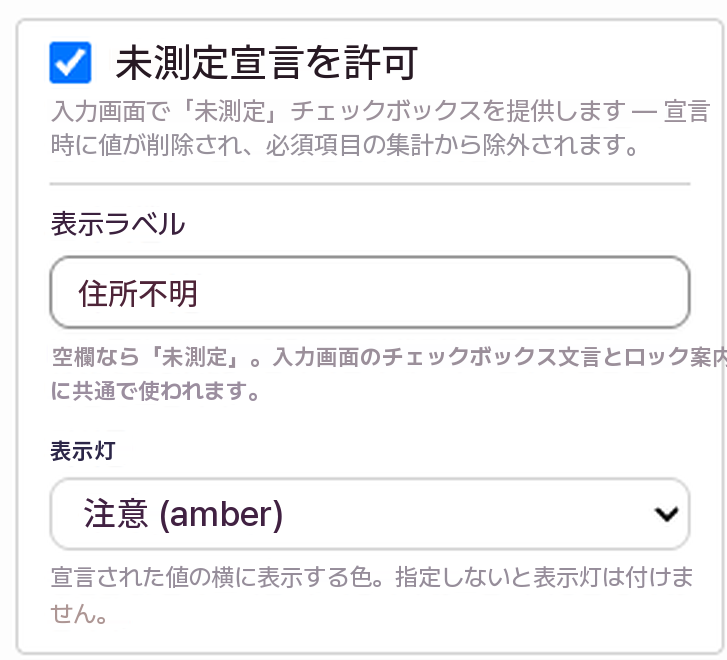
未測定宣言を許可 — 選択すると、入力画面に「未測定」チェックボックスが作成され、下の二つの項目が表示されます。
表示ラベル — 空欄にすると、デフォルト値「未測定」が適用されます。
住所不明 に変更すると、この文言が入力画面のチェックボックスとロック案内の両方に適用されます。
表示灯 — デフォルト値はなしです。
注意(amber) に変更すると、宣言された値の横にその色の表示が現れます。
注意事項
必須確認 データ破損 · フォーム完了不可
- • ⛔ 住所には特にこの宣言が必要です。オンにしないと、記録者が
ソウルのように一つの欄だけを適当に埋めて済ませることになり、必須チェックはそれをそのまま通過させます。2.2 - • ⛔ 宣言すると三つの欄がまとめて削除されます。画面の案内のとおり「宣言時に値が削除され、必須項目の集計から除外されます。」 — 郵便番号だけを残すような部分的な保持はできません。
誤解しやすい動作
- • 宣言されたフィールドは必須集計から除外されます。そのため、必須項目であってもフォームを完了できます。
参考
- • 表示灯を指定しないと、色の表示は適用されません。強調が必要な場合は、注意(amber) などを選択してください。
検証タブ — 保存前の値チェック
- 3.1検証規則がない状態
- 3.2規則の追加
- 3.3規則作成完了 — 他フィールドと比較
3.1検証規則がない状態
概要
保存する前に値が条件に合うかどうかをチェックする規則をまとめておくタブです。住所はシステムが行うチェックが一つもないタイプです — 郵便番号が五桁かどうかも、基本住所が空かどうかも確認されません。そのためこのタブが重要ですが、使える規則は事実上一種類だけです。3.3
画面説明
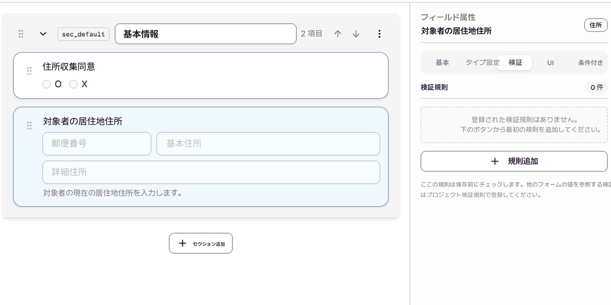
[+ 規則追加] — 最初の規則を作成します。選択した後の画面は 3.2 で説明します。
検証規則の領域と、登録された規則数です。最初は 0 件 で、住所はこの状態では何のチェックもかかっていません。
規則がない場合は、「登録された検証規則はありません。下のボタンから最初の規則を追加してください。」という案内が表示されます。
下部の案内 — 「ここの規則は保存前にチェックします。他のフォームの値を参照する検証はプロジェクト検証規則で登録してください。」
注意事項
必須確認 データ破損 · フォーム完了不可
- • ⛔ 郵便番号の桁数を強制する手段はありません。タイプ設定タブにも項目がなく、検証タブの形式 (正規表現) は住所では正常に動作しません — 理由は 3.2 で説明します。桁数が重要な場合は、郵便番号を別の単一行テキストフィールドに分けてください。
- • ⛔ 三つの欄が互いに一致しているかはチェックできません。郵便番号と基本住所が異なる地域でも保存されます — 照合は SDV の段階で人が行う必要があります。2.3
- • ⛔ 他のフォームの値を参照する検証はここでは作成できません。そのような規則は「プロジェクト検証規則」画面で登録してください — ただし、その画面では住所フィールドを参照対象として選べません。6.2
誤解しやすい動作
- • キャプチャにはフィールドが二つあります。「住所収集同意」(単一選択) と「対象者の居住地住所」 — 前のフィールドの回答によって入力の可否が分かれる関係なので、3.3 で二つのフィールドを結び付ける規則を作成します。
3.2規則の追加
概要
3.1 の [+ 規則追加] を選択すると、規則 1 ブロックが作成されます。最初は「値の範囲」が設定されていますが、住所は数値でも文字列でもない三つの欄をまとめたかたまりなので、大小比較が成り立ちません。「他フィールドと比較」に変更してください — 住所で正しく動作する唯一の種類です。3.3
画面説明
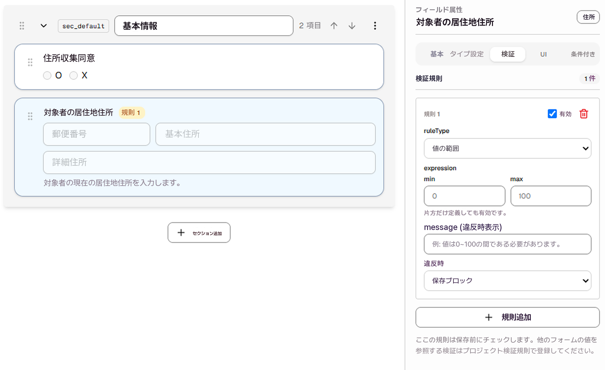
[+ 規則追加] — 規則をもう一つ作成します。(3.1 で選択したものと同じボタンです。)
キャンバスの表示名の横に「規則 1」バッジが表示されます。
規則数が 1 件 に変わります。
有効チェックボックスと削除アイコン — 規則を削除せずに一時的に停止できます。
ruleType — 規則の種類です。作成直後は「値の範囲」なので、必ず「他フィールドと比較」に変更してください。
min — 値の範囲を選んだときに表示される下限の欄です。
max — 同じ条件で表示される上限の欄です。
message (違反時表示) — 規則に違反したときに、ユーザーに表示する文言です。
違反時 — 保存ブロックまたは警告から選択します。(ruleType によっては選べなくなることもあります — 3.3)
薄い文字の 0 · 100 と「片方だけ定義しても有効です。」は値の範囲に関する案内であり、設定された値ではありません。
注意事項
必須確認 データ破損 · フォーム完了不可
- • ⛔ 「形式 (正規表現)」を住所に設定しないでください — 保存が最後までブロックされます。正規表現は三つの欄をまとめたかたまりを固定の内部文字列に変換してからチェックするため、
^\d{5}$のような式を設定すると、何を入力しても違反となり、記録者がフォームを保存する方法がなくなります。 - • ⛔ 「値の範囲」 · 「小数桁数」は何もしません。住所は数値ではないため比較が成り立ちませんが、画面では選択でき、エラーも出ません — 作成者は規則を設定したと思い込みますが、チェックは行われません。
- • message を空欄にすると、ユーザーはブロックされた理由が分かりません。必ず入力してください。
誤解しやすい動作
- • 住所で実際に動作する種類は「他フィールドと比較」だけです。その規則だけが、住所自身の値ではなく他のフィールドの値を見るためです。3.3
3.3規則作成完了 — 他フィールドと比較
概要
ruleType を他フィールドと比較に変更すると、同じフォームの他のフィールドの値と照らし合わせてチェックします。「収集に同意した場合のみ住所を受け付ける」のように、前の質問の回答によって入力の可否が分かれる関係を表現でき、住所で正しく動作する唯一の規則です。3.2
画面説明
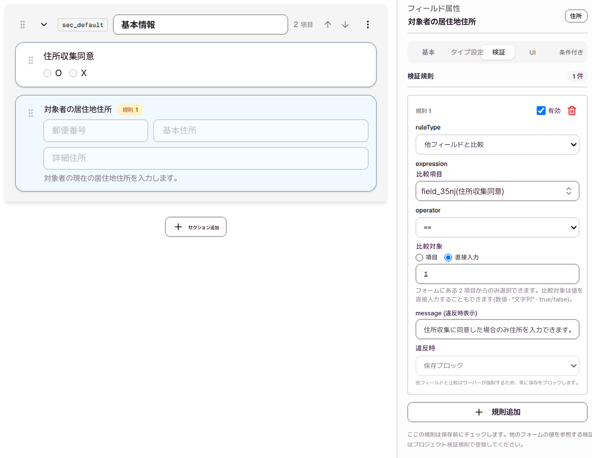
1 のときだけ保存されるように設定した状態ruleType = 他フィールドと比較 — 選択すると、下の欄が比較用に変わります。
比較項目 — 同じフォームの他のフィールドを選択します。キャプチャでは field_35nj(住所収集同意) で、単一選択フィールドです。
operator — 比較方法です。キャプチャでは ==(等しい) です。
比較対象 — 項目と直接入力から選択します。キャプチャでは直接入力で 1 を入れています — 「住所収集同意」の保存値です。
message (違反時表示) — キャプチャでは 住所収集に同意した場合のみ住所を入力できます。 です。
違反時 — グレーで無効です。画面の案内のとおり「他フィールドと比較はサーバーが強制するため、常に保存をブロックします。」 — この規則では警告を選べず、保存ブロックに固定されます。
画面の案内 — 「フォームにある 2 項目からのみ選択できます。比較対象は値を直接入力することもできます(数値 · "文字列" · true/false)。」 この一覧には住所フィールド自身も含まれていますが、選択してはいけません。
注意事項
必須確認 データ破損 · フォーム完了不可
- • ⛔ 比較対象には、画面に表示される文言ではなく保存値を入れます。キャプチャの「住所収集同意」は画面に
O·Xと表示されるため、保存値が本当に1なのかを、そのフィールドの選択肢一覧で先に確認してください — 異なっていると、同意しても保存がブロックされます。 - • ⛔ 比較項目に住所自身を選ばないでください。一覧に一緒に表示されますが、三つの欄をまとめたかたまりは比較が成り立たず、規則が気付かないうちに無効になります。3.2
誤解しやすい動作
- • 住所を入力した後にすべて消しても、この規則はチェックされ続けます。三つの欄を空にしても、フィールドは「触れた状態」のまま残るためです — 同意が撤回された場合は、空欄にするだけでは終わりません。4.3
- • この規則は警告にできません。必ずブロックすべき関係にのみ使用してください。参考として知らせたいだけなら、条件付き表示5章で最初から尋ねないほうが適しています。
UIタブ — 画面配置と案内文
- 4.1UIタブの全体構成
- 4.2レイアウト幅
- 4.3読み取り専用 · 非表示
- 4.4placeholder · helpText
4.1全体構成
概要
値そのものではなく、画面にどのように配置し、どのように案内するかを決めるタブです。このタブの設定は、保存されるデータそのものを変更しません。住所では五つの項目のうち一つが動作しません — placeholder が適用されないタイプだからです。4.4
画面説明
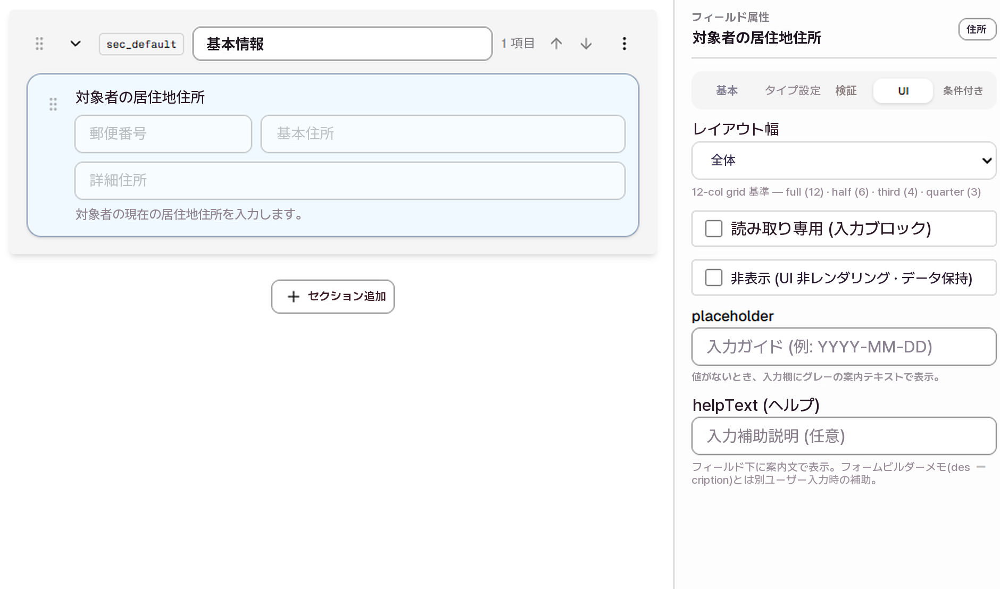
レイアウト幅 — フォームの一行の中でこのフィールドが占める幅です。4.2
読み取り専用 (入力ブロック) — 表示はしますが、変更できないようにします。三つの欄がまとめてロックされます。4.3
非表示 (UI 非レンダリング · データ保持) — 画面から隠します。三つの欄がまとめて消えます。4.3
placeholder — 住所では適用されません。三つの欄の案内文はタイプが決めた値なので、ここでは変更できません。4.4
helpText (ヘルプ) — フィールドの下に表示する案内文です。こちらは正常に動作します。4.4
タイプバッジ「住所」
注意事項
必須確認 データ破損 · フォーム完了不可
- • ⛔ placeholder に入力しても画面は変わりません。三つの欄の「郵便番号」 · 「基本住所」 · 「詳細住所」はタイプが固定した文言なので、作成者は変更できません。案内が必要な場合は helpText に記載してください。4.4
- • ⛔ 非表示は保存された住所を削除しません。画面上で隠されるだけで値はそのまま残り、抽出と監査証跡に含まれます。4.3
誤解しやすい動作
- • このタブの設定は保存された値を変えません。配置と案内だけが変わります。
参考
- • 読み取り専用と非表示を一緒に使用しないでください。非表示が優先して適用され、読み取り専用の設定は効果がありません。4.3
4.2レイアウト幅
概要
フォームの一行の中でこのフィールドが占める幅を決めます。住所は一行の中で三つの欄にさらに分かれる構造なので、幅を狭めると、最も狭い郵便番号の欄から先に崩れます。
画面説明
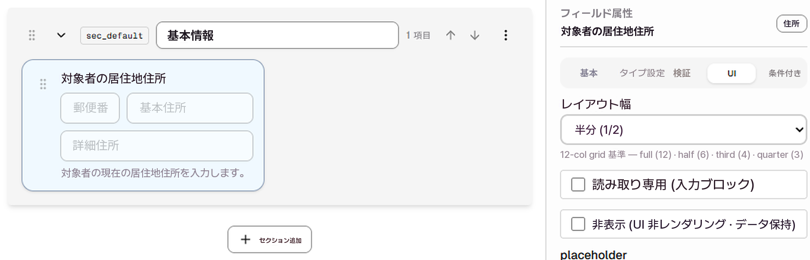
レイアウト幅 — 全体 · 半分 (1/2) · 1/3 · 1/4 から選択します。
キャンバスの入力欄の幅が半分に狭まり、郵便番号の欄の案内文が 郵便番 で切れました。欄は三つのままですが、何を記入する欄なのか読めなくなります。
12-col grid 基準 — 画面の案内のとおり「full (12) · half (6) · third (4) · quarter (3)」です。住所はこの幅をさらに三つに分けて使うため、体感の幅はより狭くなります。
注意事項
必須確認 データ破損 · フォーム完了不可
- • ⛔ 1/3 · 1/4 に狭めないでください。半分ですでに案内文が切れます — さらに狭めると、記録者がどの欄に何を記入するのか分からなくなります。
- • 全体の幅を推奨します。住所は一つのフィールドが事実上三つの欄なので、他のどのタイプよりも広いスペースが必要です。1.1
誤解しやすい動作
- • 切れたのは案内文だけで、欄の機能はそのままです。入力も保存も正常に動作し、狭く見えるだけです — だからこそ、より気付きにくくなります。
参考
- • 指定しない場合は全体の幅が適用されます。
4.3読み取り専用 · 非表示
概要
フィールドを表示しつつ変更できないようにするか、画面から隠しつつ値は保持する設定です。どちらも保存された住所を削除せず、三つの欄にまとめて適用されます — 郵便番号だけをロックしたり、詳細住所だけを隠したりする設定はありません。
画面説明
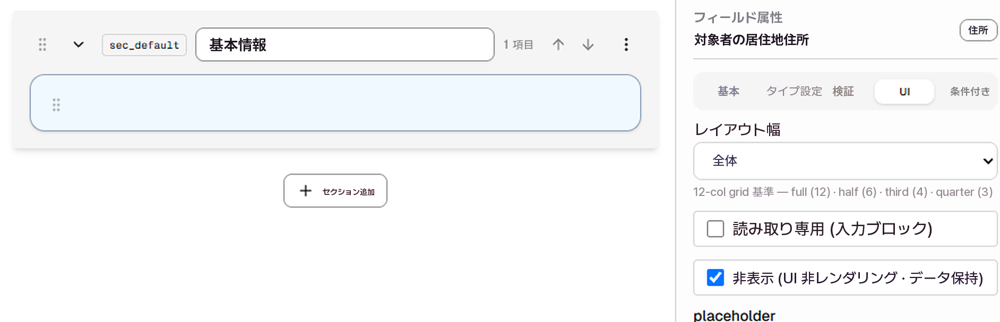
読み取り専用 (入力ブロック) — 選択すると、住所は表示されますが、記録者は修正できません。三つの欄がすべてロックされます。
非表示 (UI 非レンダリング · データ保持) — 選択すると、入力画面にこのフィールドが表示されません。
キャンバスのカードは空の枠だけが残ります。表示名も三つの欄もすべて表示されません。
レイアウト幅 — 4.2 で設定した値です。
注意事項
必須確認 データ破損 · フォーム完了不可
- • ⛔ 収集の同意が撤回された住所を非表示で隠さないでください。値はそのまま残り、抽出と監査証跡に含まれます — 保管してはならない住所であれば、隠すのではなく三つの欄をすべて消す必要があります。3.3
- • ⛔ 誤って入力された住所も非表示で隠さないでください。他の被験者の住所が入っている場合は、必ず値を修正する必要があります。1.1
誤解しやすい動作
- • 読み取り専用は、他の場所から取り込んだ住所に使用してください。記録者が直接聞き取って記入すべき項目には使用しないでください。
- • 条件によって隠す場合は、条件付き表示を使用してください。このタブの非表示は常に隠す設定です。5章
4.4placeholder · helpText
概要
入力欄の中と下に入る案内文を決めます。住所では二つの項目の運命が分かれます — helpText は正常に動作しますが、placeholder は適用されません。キャプチャがその証拠です。
画面説明
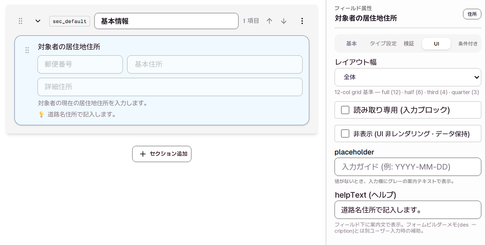
placeholder — 値がないときに入力欄に表示する薄い文字です。キャプチャでは空欄で、案内文「入力ガイド (例: YYYY-MM-DD)」だけが表示されています。
それでもキャンバスの三つの欄には「郵便番号」 · 「基本住所」 · 「詳細住所」がすでに表示されています。この文言は placeholder ではなくタイプがあらかじめ決めた値であり、上の欄に何を入力しても変わりません。
helpText (ヘルプ) — フィールドの下に表示する案内文です。キャプチャでは「道路名住所で記入します。」です。
三つの欄の下に 💡 アイコンとともに表示されます。こちらは正常に動作します。
description (ヘルプ) — 2.1 で入力した文言です。helpText とは別の項目で、アイコンなしで上の行に表示されます。
注意事項
必須確認 データ破損 · フォーム完了不可
- • ⛔ placeholder に記入した文言はどこにも表示されません。三つの欄の案内はタイプが固定した値なので変更できません — ここに記入しておくと、設定したつもりの案内が記録者に届きません。4.1
- • 案内はすべて helpText に記載してください。キャプチャのように「道路名住所で記入します。」と記載すると、地番住所と混在するのを防げます — 住所で作成者が使える唯一の案内の場所です。
誤解しやすい動作
- • 郵便番号の桁数のような形式の案内も helpText でしか伝えられません。検証では強制できないため3.1 · 3.2、この文言が事実上唯一の管理手段です。
- • description と helpText は一緒に表示されます。両方を入力すると 2 行になるため、同じ内容を二度書かないでください。2.1
条件付きタブ — 他の値に応じて表示する
- 5.1条件付き表示の有効化
- 5.2条件の設定
5.1条件付き表示の有効化
概要
他のフィールドの値に応じてこのフィールドを表示したり隠したりする機能です。住所と特に相性のよい機能です — 収集に同意していない被験者には住所を最初から尋ねないようにすれば、根拠なく個人情報を収集しないことになります。
画面説明
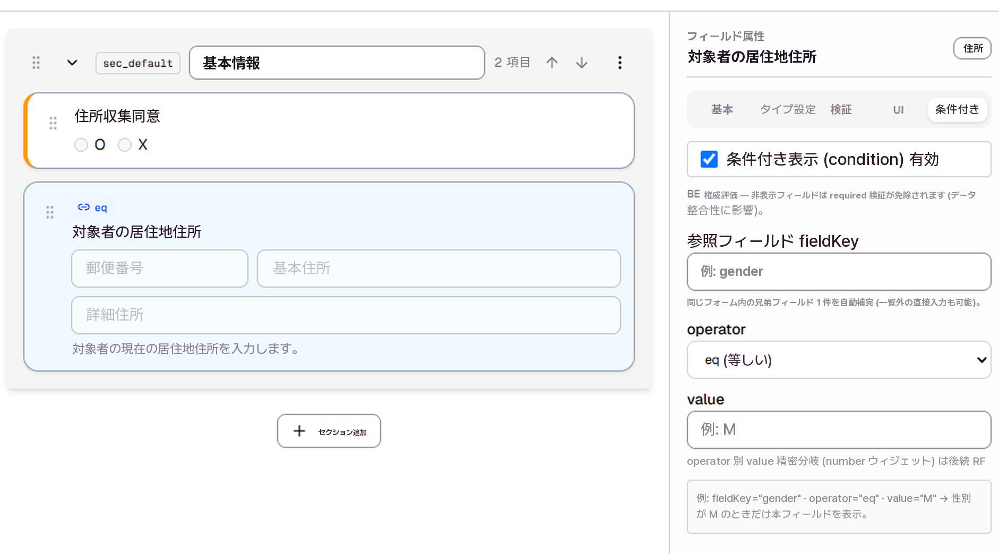
条件付き表示 (condition) 有効 — 選択すると、下の条件設定が表示されます。
キャンバスのフィールドの上に 🔗 eq バッジが表示され、条件が適用されたことを知らせます。
参照フィールド fieldKey — 条件の基準となる、同じフォーム内の他のフィールドです。同じフォームの兄弟フィールドが自動補完され、一覧にない値を直接入力することもできます。
operator — 比較方法です。デフォルト値はeq (等しい)です。
value — 比較する値です。参照フィールドの保存値を入力します。5.2
⚠ 画面の案内 — 「非表示フィールドは required 検証が免除されます (データ整合性に影響)。」 条件の判定はシステムが実行します。
下部の例 — fieldKey="gender" · operator="eq" · value="M" → 性別が M のときだけ本フィールドを表示。
注意事項
必須確認 データ破損 · フォーム完了不可
- • ⛔ 条件を設定すると必須検証が免除されます。条件が合わずに非表示になっている間は、そのフィールドが必須であっても空のままフォームが完了します。
- • ⛔ すでに入力した後に条件が偽になると、住所は画面から消えます。三つの欄の値はそのまま残るため、後から同意を撤回した場合は、残っている住所を別途消す必要があります。4.3
誤解しやすい動作
- • 個人情報は必要な場合にのみ尋ねるのが原則です。収集の同意と住所の入力を条件で結び付ければ、同意していない被験者の住所はそもそも入ってきません。3.3
参考
- • 条件を有効にして参照フィールドを空欄にすると、条件は成立しません。必ず②~④をすべて入力してください。5.2
5.2条件の設定
概要
5.1 で有効にした条件を最後まで入力した状態です。この設定では、「住所収集同意」フィールドの値が 1 のときだけ住所の入力欄が画面に表示されます。参照フィールドが単一選択なので、value の欄にはその選択肢の保存値を記入する必要があります。
画面説明
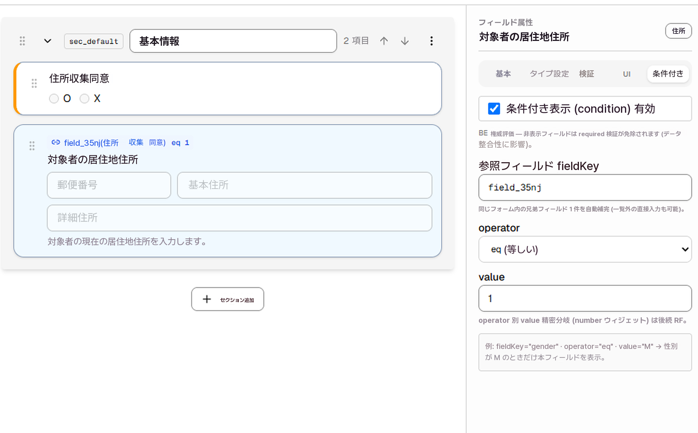
住所収集同意 が 1 のときだけ表示されるように設定した状態参照フィールド fieldKey = field_35nj — 同じフォームの「住所収集同意」フィールドを指します。
①~③をすべて入力した結果 — キャンバスのバッジが 🔗 field_35nj(住所収集同意) eq 1 に具体化されます。
operator = eq (等しい)
value = 1 — 画面に表示される O ではなく、その選択肢の保存値を入力します。
⚠ 画面の案内 — 「非表示フィールドは required 検証が免除されます (データ整合性に影響)。」
下部の例 — fieldKey="gender" · operator="eq" · value="M" → 性別が M のときだけ本フィールドを表示。
注意事項
必須確認 データ破損 · フォーム完了不可
- • ⛔ value には画面の文言ではなく保存値を入力します。「住所収集同意」が画面に
O·Xと表示されるからといってOと記入すると、条件が成立せず、住所の欄が最後まで表示されません。参照するフィールドの選択肢一覧で、保存値を先に確認してください。 - • ⛔ 参照フィールドの保存値を変更すると、条件が気づかないうちに壊れます。保存値を
1からYに変更すると、この条件はエラーもなくただ成立しなくなります — そのため、発行後の保存値の変更は危険です。 - • 同じ関係を検証規則3.3でも作成できます。両方設定すると、尋ねもしないのに保存もブロックするという重複になるため、どちらか一方だけを使用してください。
誤解しやすい動作
- • 設定した後はプレビューで確認してください。基準の値を変えながら、三つの欄が実際に表示されたり消えたりするかを確認する必要があります。
付録
- 6.1タブ別の設定項目一覧
- 6.2必ず覚えておくこと · 扱っていないもの
6.1タブ別の設定項目一覧
タブ別の設定項目
| タブ | 項目 | 何を決めるか | 本文 |
|---|---|---|---|
| 基本 | fieldKey | 三つの欄をまとめた一つの保存キー (保存後の変更禁止) | 2.1 |
| label (表示名) | 画面に表示される項目名 — いつ時点のどの住所なのかを明示すること | 2.1 | |
| description (ヘルプ) | 三つの欄の下の補足説明 | 2.1 | |
| 必須入力 | 必ず入力する必要があるか — ⚠ 三つの欄のうち一つだけ埋めても通過 | 2.2 | |
| SDV検証対象 | CRA の原資料照合の対象か — 住所をチェックできる唯一の段階 | 2.3 | |
| AE意味ロール | このタイプは指定対象ではない | 1.1 | |
| 未測定宣言を許可 | 「住所不明」を残す手段 — このタイプに特に必要 | 2.4 | |
| タイプ設定 | (すべて) | 項目が一つもない — デフォルト値さえ指定できない | 6.2 |
| 検証 | ruleType | 「他フィールドと比較」だけが動作する | 3.2 · 3.3 |
| 形式 (正規表現) | ⛔ 設定すると保存が最後までブロックされる — 使用禁止 | 3.2 | |
| 値の範囲 · 小数桁数 | ⛔ 気付かないうちに何もしない — 使用禁止 | 3.2 | |
| message · 違反時 | 違反時の文言(空欄禁止) · 他フィールドと比較は保存ブロックに固定 | 3.2 · 3.3 | |
| UI | レイアウト幅 | 12-col grid 上の幅 — 全体を推奨 (半分ですでに文言が切れる) | 4.2 |
| 読み取り専用 | 表示しつつ修正できないように — 三つの欄を一括 | 4.3 | |
| 非表示 | 画面に表示しない — 三つの欄を一括 · 保存された値はそのまま残る | 4.3 | |
| placeholder · helpText | ⛔ placeholder は適用されない · helpText のみ動作 | 4.4 | |
| 条件付き | 条件の有効化 | 条件付き表示を使用するかどうか (必須検証の免除) | 5.1 |
| 参照フィールド fieldKey | 条件の基準となる、同じフォームのフィールド | 5.2 | |
| operator · value | 比較方法と比較する値 (保存値を入力) | 5.2 |
電話番号 · メールタイプとの違い
| 項目 | 電話番号 · メール | 住所 |
|---|---|---|
| 入力欄の数 | 一つの欄 | 三つの欄を一つのフィールドに — 保存は一つにまとめられる 1.1 |
| デフォルト値 (defaultValue) | 指定できる | 項目そのものがない 6.2 |
| 形式チェック | メールは常に適用 | まったくない — 郵便番号の桁数も見ない 3.1 |
| 検証タブの正規表現 | ドメイン制限などに使用 | ⛔ 設定すると保存が永久にブロックされる 3.2 |
| placeholder | 正常に適用 | ⛔ 適用されない — helpText のみ 4.4 |
| レイアウト幅 | 半分までは問題ない | 全体を推奨 — 半分で文言が切れる 4.2 |
6.2必ず覚えておくこと · 扱っていないもの
必ず覚えておくこと
必須確認 データ破損 · フォーム完了不可
- • 検証タブの「形式 (正規表現)」を住所に設定しないでください。何を入力しても違反となり、記録者がフォームを保存する方法がなくなります。3.2
- • 必須入力は三つの欄のうち一つだけ埋めても通過します。郵便番号だけを記入してもフォームが完了するため、三つの欄をすべて受け付ける必要がある場合は、ヘルプで案内し、SDV で確認してください。2.2 · 2.3
- • placeholder に記入した文言はどこにも表示されません。案内はすべて helpText に記載してください。4.4
- • 「値の範囲」 · 「小数桁数」は何もしません。エラーも出ないため、規則を設定したと思い込んだまま見過ごすことになります。3.2
- • 住所は個人情報です。収集の同意と結び付けて条件付きで尋ね、同意が撤回されたら三つの欄をすべて消してください。3.3 · 4.3 · 5.1
- • 1/3 · 1/4 の幅を使わないでください。半分ですでに郵便番号の欄の案内文が切れます。4.2
誤解しやすい動作
- • システムが行うチェックは一つもありません。郵便番号と基本住所が互いに異なる地域でも保存されます — 照合は SDV の段階で人が行う必要があります。2.3 · 3.1
- • 欄は三つですが、一つのフィールドです。必須 · 読み取り専用 · 非表示 · 未測定宣言はすべて三つの欄にまとめて適用されます。1.1 · 4.3
- • 欄ごとに管理する必要がある場合は、タイプを分けてください。郵便番号だけ桁数を強制したい場合は、単一行テキストフィールドを三つ作るほうが適しています。2.2 · 3.1
参考
- • 変更履歴には三つの欄がまとめて記録されます。
(06234) ソウル特別市 江南区 テヘラン路 123 5階 501号のように一行で残ります。
この文書で扱っていないもの
※ タイプ設定タブ — 住所には設定項目が一つもありません。電話番号 · メールにあるデフォルト値(defaultValue)項目さえ表示されません — 三つの欄をまとめた値なので、あらかじめ埋めておく手段が提供されていないためです。そのため、このマニュアルにはタイプ設定の章がなく、2章の次が検証タブです。1.1
郵便番号検索 (住所検索) — 提供されていません。三つの欄はすべて直接入力で、地図や検索ウィンドウは開きません。1.1
欄ごとの必須 · 欄ごとの検証 — 「郵便番号だけ必須」のような設定はどのタブにもありません。システムは三つの欄を一つの値として扱います。2.2
郵便番号の形式チェック — 桁数を強制する項目はありません。正規表現も住所では動作しないため3.2、桁数が重要な場合は単一行テキストフィールドに分けてください。
自動計算 (calculation) — タイプ設定タブにチェックボックスはありますが、住所には算出値を移す表現形式がないため、ロックされた空欄になります。計算式で値を算出する機能なので、数値タイプで使用してください。
プロジェクト検証規則での参照 — 他のフォームの値を見る「プロジェクト検証規則」画面では、住所フィールドを参照対象として選べません。値が三つの欄のまとまりなので、大小比較が成り立たないためです。3.1
AE意味ロール — 基本タブに項目はありますが、このタイプは指定対象ではありません。はい/いいえか単一選択フィールドに指定してください。1.1